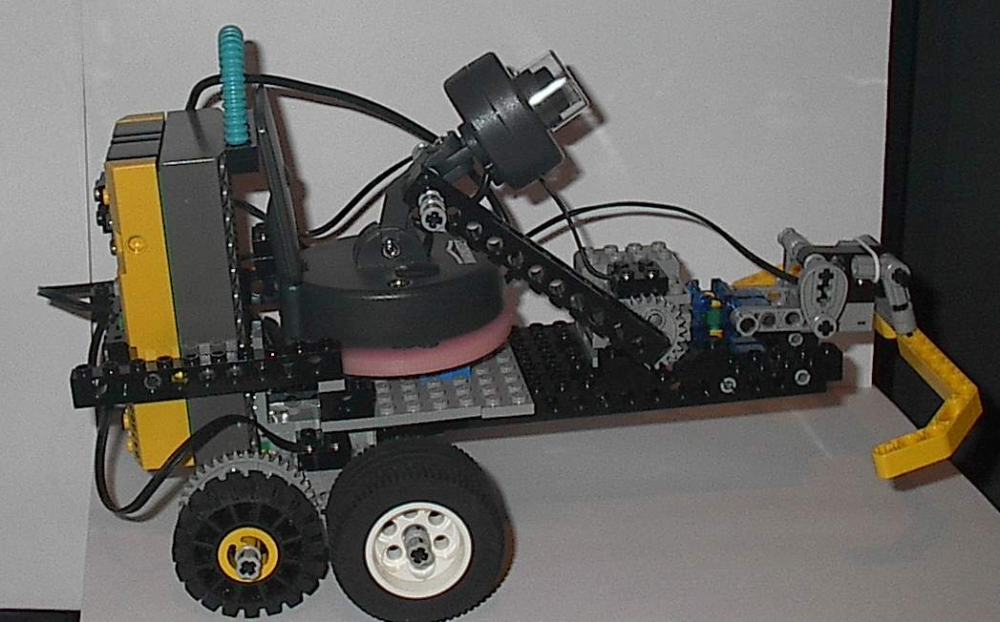

|
|
Start of Tutorial |
It uses the IBM implementation of the Java Speech API and IBM ViaVoice for voice recognition.
It needs IBM ViaVoice installed on your PC and a copy of the IBM alphaWorks Speech for Java software downloaded from http://www.alphaworks.ibm.com/tech/speech and installed.
[Note by editor] A Java-based speech recognition system freely available presently is Sphinx-4.Download the lejos Rover.java program, compile it with lejosc and and then download it to the RCX.
Download the SpeechControl.java program, compile it with javac, and run it by "java SpeechControl". Make sure that the IBM alphaWorks Java Speech jar (imbjs.jar), the lejos vision api jar (vision.jar) and the josx.rcxcomm package (pcrcxcomm.jar) are on the classpath. You also need the alphaworks Java Speech API dlls (in ibmjs/lib) on the PATH. You also need to download res_en.properties and rover_en.gram in the same directory as SpeechControl.class.
Run "java SpeechControl" and you can control the robot using the commands in rover_en.gram, such as "forwards", "backwards", "left", "right", "up" (tilt camera up), "down". "stop" etc. Say "Goodbye" to stop the program.
SpeechControl.java is a modified version of IBM's hello test program.
Here is a a picture of the robot with an X10 Xcam2 camera that I used to test this program.

|
|
Start of Tutorial |